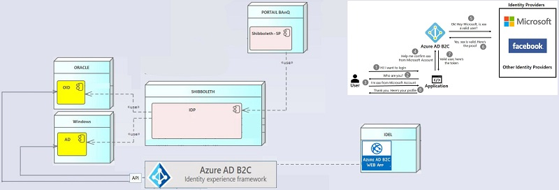

| Introduction |
Le service BAnQ Authentification est un composant (propriétaire) qui permet aux applications de la BAnQ
d'implémenter les services de sécurité disponibles sur le portail Microsoft Azure Actice Directory/Business to Client (B2C).
En d'autres termes, il s'agit de dédier l'implémentation de la plupart des flux utilisateurs (non métier) communs aux applications de BAnQ
à une plateforme dédiée qui devra s'en charger à notre place et la faire de la meilleure des facons en fonction des exigences
et des évolutions technologiques en cours dans le domaine. Ces flux non fonctionnels sont :
|
||||||||||||||||||||||||
|---|---|---|---|---|---|---|---|---|---|---|---|---|---|---|---|---|---|---|---|---|---|---|---|---|---|
| Contexte |
Dans l'environnement actuel des applications de la BAnQ, chacune des applications utilise le mécanisme de fédération
des identités Shibboleth pour gérer l'authentification, qui communiquera avec un ou plusieurs fournisseurs d'identités.
dont le principal utilisé pour la gestion des accès est le CRM Pivotal. Pivotal expose alors des services web (SOAP) pour permettre l'ajout et la mise à jour dans l'annuaire des identités. Chacune des applications possède son implémentation de chacun des flux décrit plus haut dépendemment de l'architecture en place. |
||||||||||||||||||||||||
| Architecture |
L'un des principaux objectifs du projet GIA eut été de décommissionner les services Shibboleth et Pivotal et de faire communiquer les applications
de BAnQ avec la plateforme Azure afin de leur permettre de bénéficier de toutes les meilleures pratiques en terme de sécurité des applications,
des mécanismes de gestion des identités et des accès, de surveillance et d'autorisations qui y sont développés.  |
||||||||||||||||||||||||
| Fonctionnement |
Le service BAnQ Authentification interface directement avec le portail Azure AD/B2C afin de déclencher automatiquement les flux d'utilisation
(décrits précédemment) sur la base des informations sur les applications inscrites dans le portail. En effet, pour pouvoir implémenter ces services, chacune des applications devra tout dabord être inscrite dans le portail Azure. Dans un deuxième temps, les mêmes applications doivent également être enregistrées auprès du service d'authentification. Dès ce moment, le service d'authentification fourni les API suivantes (qui pourront être consommées par les applications clientes) :
Le flux de réinitialisation de mot de passe se trouvera directement sur la page de connexion et permettra à l'utilisateur de restaurer son mot de passe en cas de perte. Le service d'authentification fourni à ses applications clientes une poignée de services web de type REST qui pourront alors être consommés pour implémenter les différents flux au besoin. |
||||||||||||||||||||||||